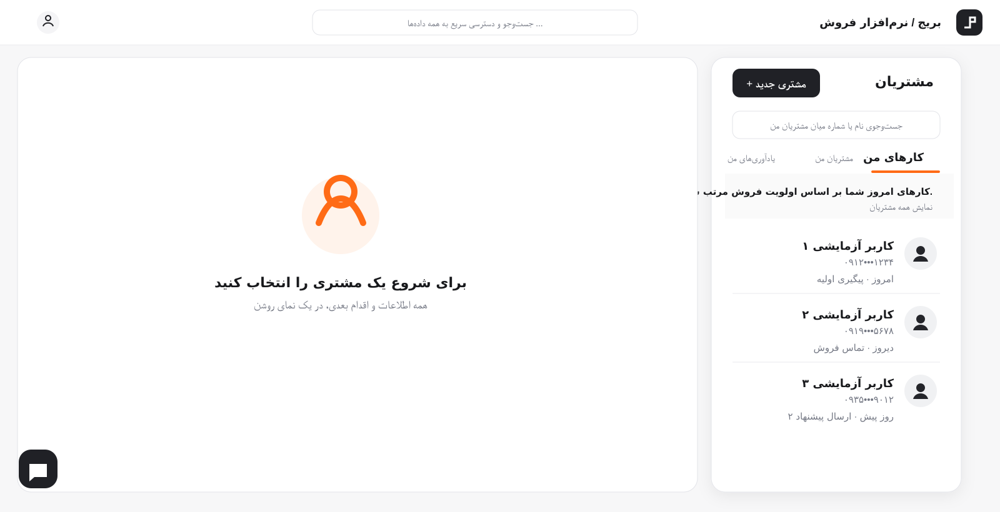
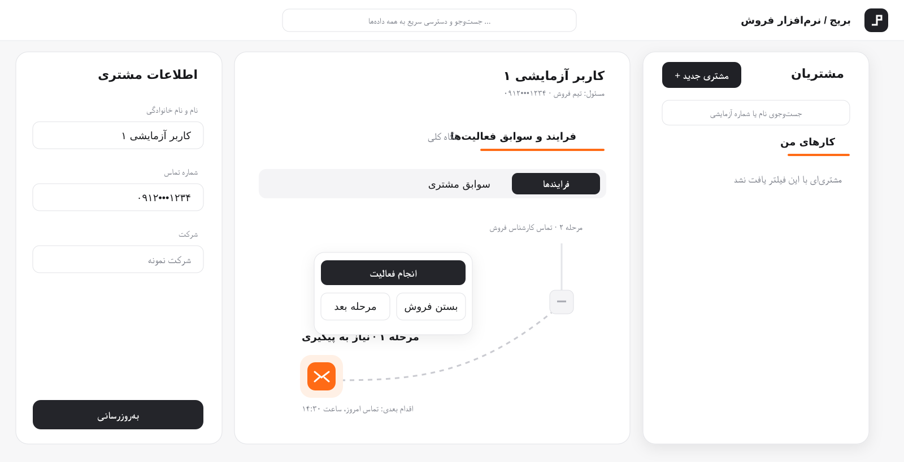
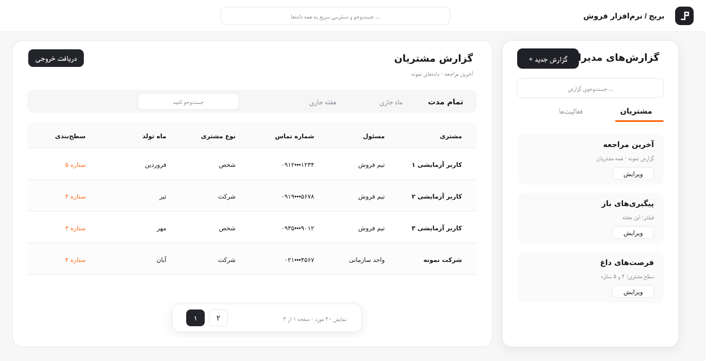

CRM چیست و چرا فقط دفترچهٔ مشتری نیست؟
CRM زمانی ارزشمند است که اطلاعات مشتری را به اقدام بعدی، پیگیری و تصمیم فروش وصل کند.
مطالعهٔ مقاله ←مقالههای کاربردی بریج دربارهٔ CRM، ERP، سیستمسازی و عملکرد فروش.

CRM زمانی ارزشمند است که اطلاعات مشتری را به اقدام بعدی، پیگیری و تصمیم فروش وصل کند.
مطالعهٔ مقاله ←
با تعریف مراحل روشن، مسئول مشخص و یادآوری بهموقع، فرصتهای فروش گم نمیشوند.
مطالعهٔ مقاله ←
CRM روی رابطه و درآمد تمرکز میکند؛ ERP در ادامه، عملیات جامع کسبوکار را یکپارچه میسازد.
مطالعهٔ مقاله ←سیستمسازی یعنی دانش پراکندهٔ تیم به روال، چکلیست و شاخص قابل پایش تبدیل شود.
مطالعهٔ مقاله ←تعداد فرصتها، نرخ تبدیل، زمان پاسخ، ارزش قیف و فعالیتهای انجامشده، نقطهٔ شروع خوبی هستند.
مطالعهٔ مقاله ←نرمافزار باید کنار هدفگذاری، مرور عملکرد و اقدام منظم قرار بگیرد تا به رشد واقعی کمک کند.
مطالعهٔ مقاله ←